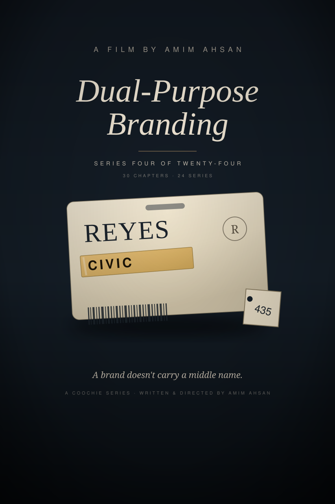

Civic Reyes
22, the name
Born Dolores. Rebranded herself in June. Learning what a name costs after you buy it.

Series Four of Twenty-Four
A brand doesn't carry a middle name.
A marketing student legally renames herself after a car, puts her own face on a billboard, and finds out who owns a word once it is printed.
Series four · one year
Dolores Marie Reyes has been Dolly her whole life: a sheep, a trolley, a hand truck, a doll that says three sentences. She is twenty-two, three months from a marketing degree, and her final project is to rebrand something that cannot be rebranded. She picks herself.
Four hundred and thirty-five dollars, three weeks in a newspaper, and four minutes in Room 214 of the county courthouse later, she is Civic Reyes — a word that means a citizen's duty and a compact sedan, doing two jobs at once, which is the whole thesis.
It did two hundred thousand views and sold eleven cars, which is four more than the month before, so it worked about as well as a balloon.
Then the paperwork lags, the credit file splits in two, the manufacturer sends a letter about a trademark she does not own, and her father's dealership puts her face forty feet over Route 6. Thirty chapters about the first advertisement ever run on a person, and the woman whose name it was before it was hers.
Twelve who are in it
22, the name
Born Dolores. Rebranded herself in June. Learning what a name costs after you buy it.
54, the mother
Hospital billing. Named her daughter after a woman she could not keep. Waited in the corridor for four hours.
58, the father
Thirty-one years selling cars under his own name. Does not know how to do the other thing.
the grandmother
Twenty-two years of hotel laundry. Wrote on the back of a ledger page: Dee is not my name.
23, the roommate
Paints walls and mixes sound. Takes the rent even when it is offered late.
41, the agency
Runs eleven desks and one fish. Sells what the client will buy and says so out loud.
66, the professor
Assigns the impossible thing every year and is disappointed when nobody does it.
22, the rival
Filed a trademark on someone else's name and called it a case study.
63, Room 214
Nineteen years of docket. Rules on whether a name is yours, never on whether it is good.
23, the ex
Says the obvious thing kindly and is surprised when it lands.
61, the DMV
Has outlasted nine computer systems. The third this month.
the other lead
Laminated. Printed in March. Still says the old name.
Three parts · five chapters a page
Full screenplay · INT. / EXT.
Part One — The Name
Eight students. A projector. DR. MIRIAM SOKOLOV, sixty-six, sits on the edge of the desk with her arms folded, which is how she listens.
SOKOLOV
Deodorant. Go.
DOLLY
"Certain." It's a deodorant for people who are tired of being lied to. No ocean. No waterfall. A grey stick and a word that means you won't have to think about it again.
SOKOLOV
Who's it for?
DOLLY
Everybody between twenty-five and fifty who has ever stood in a drugstore aisle holding two sticks and feeling like a failure.
Silence. BLAKE, twenty-two, in a quarter-zip, writes something down and does not look up.
SOKOLOV
What's your name?
DOLLY
Dolly.
SOKOLOV
Dolly. That's a name doing two jobs already. Nobody's named Dolly and also taken seriously on the first day. You've been running that campaign your whole life. What did you do about it?
DOLLY
...I got a blazer.
Sokolov laughs — one short bark — and the room exhales.
SOKOLOV
Final project. Rebrand something that cannot be rebranded. Not a product. Not a company. Something with no marketing budget and no permission.
BLAKE
Like what.
SOKOLOV
If I tell you, you'll do that.
She writes one word on the board and underlines it twice.
NAMES.
SOKOLOV
A name is the first advertisement ever run on a person. It runs before you speak. It runs in every room you're not in. Bring me one that works harder than it has to.
Dolly looks at the word. Her pen is not moving. Everyone else's is.
Part One — The Name
The shoebox has a rubber band around it. Inside: immunization cards, a report card from 2007, a photograph, and a birth certificate.
DOLLY REYES, twenty-two, reads it the way you read a letter from a lawyer.
DOLLY
Dolores Marie Reyes.
TOLU
(from the couch)
That's a beautiful name.
DOLLY
It means sorrows. Plural. My mother put a plural on me at birth.
Tolu comes over, looks at the certificate, and turns it toward the light.
TOLU
It's your grandmother's name.
DOLLY
I know it's my grandmother's name.
TOLU
You know she's dead, right? Since April?
DOLLY
I was at the funeral, Tolu.
Dolly turns the certificate over. On the back, in blue ballpoint, in a hand she knows: Dolores — for my mother. Do not shorten it.
DOLLY
She wrote on my birth certificate.
TOLU
That's very on-brand for your mother.
Dolly puts it face down on the table and looks at the job application on the laptop: FIRST NAME — the cursor blinking in an empty box.
DOLLY
Every form I have ever filled out has asked me my name like it's a test I already failed.
TOLU
So put Dolly.
DOLLY
Dolly is a sheep and a trolley and a hand truck. Dolly is a doll that says three sentences.
She types nothing. The cursor blinks.
Part One — The Name
DOLLY
Dual-purpose branding. When one asset does two jobs at once. A logo that's also a letter. A colour that's also a flag. A jingle that's also a warning.
TOLU
And a name that's also a product.
DOLLY
A name that's also a product.
She types it into the document title. TOLU reads over her shoulder for a while.
TOLU
You're going to change your name for a class.
DOLLY
I'm going to change my name because of a class.
TOLU
Those are the same sentence.
DOLLY
No. One of them means I'm doing homework. The other one means the homework is correct.
Dolly at the front of the room with three slides. Blake in the back with his arms folded.
DOLLY
The strongest name in the room is the one that promises something and delivers a product. Volvo. Sharp. Caterpillar. Whole industries built on a word that was already doing another job.
BLAKE
So name yourself Sharp and hope nobody notices.
DOLLY
So name myself something that means a citizen's duty and a compact sedan and see which one the world hears first.
The room goes quiet in the specific way a room goes quiet when someone has said the real thing out loud.
SOKOLOV
You understand that a brand doesn't have a mother.
DOLLY
I have a mother. That's the whole problem.
Part One — The Name
A form with eleven boxes. Dolly fills it in with a pen chained to the counter.
CLERK
Reason for the change.
DOLLY
Personal.
CLERK
Everyone says personal.
DOLLY
Professional.
CLERK
Now that's new. Four hundred and thirty-five dollars. And it has to run in a newspaper for three weeks.
DOLLY
Why a newspaper?
CLERK
So nobody can change their name to get out of a debt. That's the reason. The other reason is the newspaper gets the money.
Dolly looks at the amount. Then at her phone. Then at the amount.
RAY REYES, fifty-eight, waits on the steps in a windbreaker from a car dealership. He has been waiting a while and pretending he hasn't.
RAY
How much?
DOLLY
Four thirty-five.
He takes a fold of twenties out of his wallet without counting it and puts it in her hand.
DOLLY
Dad.
RAY
It's not for the name. It's for the nerve. Your mother's going to kill me and I'd rather be killed for something.
DOLLY
You don't even know what I'm changing it to.
RAY
I know. Tell me at dinner and I'll act surprised.
Part One — The Name
JUDGE PHYLLIS WARD, sixty-three, reads the file without looking up.
WARD
You're asking the court to change Dolores Marie Reyes to Civic Reyes.
DOLLY
Yes, Your Honour.
WARD
First name only. No middle.
DOLLY
A brand doesn't carry a middle name. It carries a promise.
Ward takes her glasses off. This is the moment the room changes temperature.
WARD
I've had this docket for nineteen years. I've had a man change his name to his favourite footballer, a woman change hers to a colour, and a fourteen-year-old petition the court to be called Batman, which I denied. Why should this be granted?
DOLLY
Because it's the only word that ever promised me anything. Volkswagen promised a people's car. Civic means the city. It means being a citizen. I've spent twenty-two years being called a thing that made people smile at me and then ask me to speak to a manager.
WARD
The court doesn't rule on whether a name is good. Only whether it's yours.
DOLLY
It's mine.
WARD
Is it your mother's?
A pause long enough that the stenographer's hands stop.
DOLLY
Dolores was her mother's. It's not mine to keep and not mine to throw away. It's a coat in a closet.
WARD
Are you going to wear the coat?
DOLLY
I don't know yet.
Ward studies her for a long moment. Then she writes two words on the order and signs it.
WARD
Granted. Publish it for three weeks and bring me the affidavit. And Miss Reyes — the court doesn't care which name you answer to. Everyone else will.
Part One — The Name
Dolly comes out of Room 214 with a certified copy in her hand and stops in the middle of the corridor because her legs have decided to have a hearing of their own.
MARISOL REYES, fifty-four, is sitting on the bench. She has been there the whole time and did not come in.
DOLLY
You were out here.
MARISOL
I was out here.
DOLLY
For how long?
MARISOL
Since eight. I brought a book. I opened it once.
Dolly sits down next to her. The corridor does its corridor things: a door, a cough, a lift arriving.
MARISOL
Is it done?
DOLLY
It's done.
MARISOL
Then say it. Say the whole thing out loud so I can hear what it sounds like.
Dolly looks at the certified copy. Then at her mother.
DOLLY
Civic Reyes.
Marisol nods slowly, the way you nod at a diagnosis you expected.
MARISOL
There was a car.
DOLLY
There was a car.
MARISOL
Your father sold them. We couldn't afford one for six years. He used to bring the brochures home and you'd colour in the wheels.
DOLLY
I remember.
MARISOL
So it's not nothing. I want you to know I don't think it's nothing.
She stands, buttons her coat, and walks out. At the door she stops without turning around.
MARISOL
Dolores is going to be so disappointed. And she's going to be dead about it, which means she gets to be right forever.
Part One — The Name
A ticket, a wait, a woman with a stamp. MS. PRUITT, sixty-one, has the expression of someone who has outlasted nine computer systems.
PRUITT
Reason for the visit.
DOLLY
Name change.
PRUITT
Court order.
Dolly slides it over. Pruitt reads it twice, then looks up.
PRUITT
Civic.
DOLLY
Civic.
PRUITT
You're the third this month. There was a boy in April who's now legally Mack. Not Mac. Mack, like the truck.
She types. The printer makes a sound like a small animal.
PRUITT
New photo. Stand on the line. Don't smile, we're not doing smiles this year.
A library card comes across the counter. CIVIC REYES. The librarian, a woman in her thirties with a lanyard full of pins, hands it over.
LIBRARIAN
You had one of these before. Under another name.
DOLLY
Does it follow me over?
LIBRARIAN
The books do. The card's new. You've got two holds and eleven dollars in fines from 2019.
DOLLY
That was a different person.
LIBRARIAN
It's the same library.
Dolly pays the eleven dollars in cash. She keeps the receipt, which is the only document in her life that has no name on it at all.
Part One — The Name
Sokolov reads the roll from a printout, her pen moving down the list.
SOKOLOV
Reyes.
DOLLY
Here.
SOKOLOV
Reyes, D. or Reyes, C.?
DOLLY
C.
Sokolov writes something on the sheet and does not look up. Blake turns around in his seat.
BLAKE
It's real? You actually did it?
DOLLY
The court was very nice about it.
BLAKE
What does your mother call you?
DOLLY
That's a different campaign.
SOKOLOV
Nine words. Introduce yourself in nine words. Not eight, not ten. I'll count.
The room squirms. A boy says "My name is Jason and I'm from Albany," which is eight, and Sokolov makes him do it again with feeling.
DOLLY
I'm Civic. I'm named after something you already own.
Sokolov counts on her fingers. Nine. Then she nods, once, and moves on, and that nod is worth more than the court order.
SOKOLOV
Now the hard part. The world will not update as fast as the paperwork. For about six months you are going to be a rumour in your own life. Enjoy it. It's the only time anyone will ever be interested in your name instead of your work.
Part One — The Name
Arroz, pollo, a bowl of limes. Ray serves. Marisol passes plates. Tía ROSALBA, fifty-nine, has already heard and has opinions she is saving for dessert.
RAY
So. Big week.
DOLLY
Big week.
ROSALBA
The DMV called me. They wanted to know if I knew a Civic Reyes and I said I don't know any Civic, but I know a Dolores who's going to be very sorry.
DOLLY
They called you?
ROSALBA
You gave them my name as a reference. I'm your aunt. I'm the reference for everything.
Marisol eats. She eats with the concentration of a woman doing a job.
RAY
Look. I sold cars for thirty-one years. You know what a name is worth on a lot? Four thousand dollars. That's the difference between a car with a name and a car without one. Same engine.
DOLLY
That's the thesis, Dad.
RAY
Then your thesis is right and your mother is still not going to pass you the limes.
Marisol sets down her fork.
MARISOL
I named you after your grandmother because I wanted her to live forever and I wanted you to know whose hands fed you. You have made that into a marketing exercise and I am supposed to be a good sport about it at dinner.
DOLLY
Mama.
MARISOL
Eat your chicken. It's Sunday.
Part One — The Name
They wash up together the way they have for twenty years: Marisol washes, Dolly dries, neither of them talks about the thing.
MARISOL
She hated it too, you know.
DOLLY
Who?
MARISOL
Your grandmother. Dolores. She used to say her name sounded like a church she didn't go to.
Dolly stops drying.
MARISOL
She worked laundry at the Hotel Wescott for twenty-two years. Nights. She had a name tag that said DOLORES in plastic letters and the manager called her Dee because he said the whole thing took too long.
DOLLY
So she'd understand.
MARISOL
She'd understand better than me. That's not the same as being happy about it.
Marisol puts the last plate in the rack, dries her hands, and puts one hand flat on the lid of the box.
MARISOL
This was hers. It came home from the home in a bag and I haven't opened it.
DOLLY
Open it.
MARISOL
No.
DOLLY
Mama.
MARISOL
I said no. I'll open it when I can, and you'll open it when I'm dead, and that's how it works in this family. Don't improve it.
She takes the box and puts it back on top of the refrigerator, where it has been for eight months.
MARISOL
She used to say a name is a coat. Wear the one that fits. Hang the other one up. Don't throw it away.
Part Two — The Campaign
BERNIE CHO, forty-one, comes out to get her personally, which is either a good sign or a bad one.
BERNIE
You're the one who changed her name.
DOLLY
I'm the one who changed her name.
BERNIE
I read your project. Half the people here think it's the stupidest thing they've ever heard and the other half are furious they didn't think of it.
DOLLY
Which half are you in?
BERNIE
I'm in the half that has to explain it to a client on Thursday. Here's your badge.
The badge comes out of the printer. It says DOLLY REYES, because HR processed her in March.
DOLLY
It's the old name.
BERNIE
It's a badge. The badge is never the fun part.
Bernie walks her to a desk with a monitor and a phone and a stack of old campaign decks.
BERNIE
You're on the Reyes Motors account. Local dealership. Family-owned. They've been with us nine years and they're the only client who pays on time, so don't be clever with them.
Dolly sits down slowly, the way you sit when the floor has moved.
DOLLY
Reyes Motors.
BERNIE
Reyes Motors.
DOLLY
That's my father's dealership.
BERNIE
(after a beat)
...Of course it is.
Part Two — The Campaign
Ray Reyes sits across from his daughter and shakes her hand, because there are three other people in the room and this is a client meeting.
RAY
Miss Reyes.
DOLLY
Mr. Reyes.
Bernie's eyes go between them once and then decide to be professional about it forever.
BERNIE
Your problem, as I understand it, is that nobody walks into a dealership any more. They walk into a website, and the website looks like every other website, and then they buy the car from a man in another county.
RAY
We're not the cheapest. We're not the biggest. We're the ones who've been on that lot since 1978 and my father's name is still on the sign.
BERNIE
So we sell the name.
Dolly looks up. There it is — the whole thing, in a glass room, with her father across the table.
DOLLY
The name on the sign is Reyes. Not Civic.
BERNIE
I know what the name is.
DOLLY
You're going to want to put me in the campaign. Local girl, local name, changed her name to a word that's on the back of a car.
Bernie does not deny it. Ray, who has been a salesman for thirty-one years, sees the exact moment his daughter understands the deal she is in.
RAY
It's a good campaign.
DOLLY
It's a great campaign. That's what's wrong with it.
BERNIE
Write the deck. Thursday. If it's terrible, we'll do the one with the balloons.
Part Two — The Campaign
The banner is up before she has signed anything: CIVIC IS HERE. Six feet tall, over the used row, with a space left for the photograph.
DOLLY
You printed it already.
RAY
It's a banner. Banners are cheap and hope is expensive.
DOLLY
Dad. This is my literal name on a car lot.
RAY
And it's my literal name over the door, and I've been standing under it for thirty-one years. Welcome to the family business. It's the same business. It was always the same business.
The photographer crouches. Dolly looks at the banner, and the light does the thing the light does at six forty in October, and she lets him take the picture.
Inside, through glass, Ray's office: a desk, a phone, a photograph of Dolores-the-grandmother on the wall beside a calendar from 2019.
DOLLY
You still have her picture up.
RAY
She worked here three nights a week for six years. Cleaning. After the hotel, before the home. She wouldn't take money from me so I put her on payroll and she cleaned the showroom like it was a church.
DOLLY
I didn't know that.
RAY
There's a lot you don't know, and most of it you can't put on a banner.
He picks up the phone. Dolly watches her own name go up over the used row in six-foot letters.
Part Two — The Campaign
A billboard: CIVIC IS HERE — REYES MOTORS — and a photograph of a girl standing under a banner, looking like she has just decided something.
TOLU
(in the car, filming it)
That's you. That's your face at forty feet.
DOLLY
That's my face at forty feet being used to sell a hatchback.
TOLU
How many people have seen it?
Dolly looks at her phone. Then at the billboard. Then at her phone.
DOLLY
Two hundred thousand.
The comment section, scrolling. Somebody has found the court record. Somebody has posted the court record. Somebody has posted her high-school yearbook photo beside the billboard.
TOLU
Don't read them.
DOLLY
I'm reading them for research.
TOLU
You're reading them for punishment.
A comment in the middle of the screen: "her poor mother." Dolly puts the phone face down on the mattress.
DOLLY
Two hundred thousand people have an opinion about my mother and none of them have met her.
TOLU
That's what you wanted.
DOLLY
That's what I said I wanted.
Part Two — The Campaign
Bernie slides the letter across without a word. Three pages. A law firm in another state. The words CEASE AND DESIST in the subject line.
DOLLY
(reading)
"Use of the mark CIVIC in commerce..."
BERNIE
You can be called it. You cannot sell with it. That's the whole letter in one sentence, and the other two pages are a man billing by the hour.
DOLLY
It's my name.
BERNIE
It's their name. It's been their name since 1972. You got here forty years late and you're the one with the birth certificate.
Dolly reads the letter twice, then sets it down with enormous care.
DOLLY
So I can't use my own name on a poster.
BERNIE
You can use it on a poster. You can't use it on a poster with a car in it.
DOLLY
So we take the car out.
BERNIE
Then it's a poster about a girl who changed her name, which is a documentary, which nobody buys a hatchback from.
DOLLY
Then we don't sell the hatchback.
BERNIE
Reyes Motors is paying us forty-one thousand dollars and my name is on the invoice.
Dolly picks up the letter and reads the signature line out loud, slowly, the way you read something to make it smaller.
DOLLY
"Yours in good faith."
BERNIE
They always say that. It's the only line in the letter that costs nothing.
Part Two — The Campaign
The agent, DEB, fifty-one, has the application on screen and is frowning at it in a way that has nothing to do with Dolly's income.
DEB
Your credit file comes back in two pieces.
DOLLY
Two pieces.
DEB
One's a Reyes, D. with eight years of history and one late payment in 2021. The other's a Reyes, C. with the same social and no history at all. The system thinks one of them is a fraud.
DOLLY
They're the same person. I have the court order.
DEB
I believe you. The system doesn't have an opinion, which is worse than having the wrong one.
She prints something and hands it over. DISPUTE FORM. Another form. Dolly has become a woman who carries forms.
Dolly sits on the hood of her father's loaner car with the dispute form in her lap and calls the number on the back. Hold music. She counts the loops: nine.
DOLLY
(into the phone, evenly)
Yes. Reyes, C. R-E-Y-E-S. No, there's no middle initial. There was, but the court removed it.
A pause. She closes her eyes.
DOLLY
Because a brand doesn't carry a middle name.
She opens her eyes. Says it again, quieter, to herself, and hears how it sounds standing in a parking lot in the actual world.
Part Two — The Campaign
NICO, twenty-three, sets down two cups and sits. He has been looking at her for a full minute without saying anything.
NICO
Dolores.
DOLLY
Civic.
NICO
I saw the billboard. My mother saw the billboard. My mother called me and asked if you were in a cult.
DOLLY
It's not a cult, it's a campaign.
NICO
That's what a cult would say.
She laughs. He doesn't, quite, and then he does, and for a second it is two years ago in this same café.
NICO
Can I say the obvious thing?
DOLLY
You're going to.
NICO
I liked the old one.
Dolly turns her cup a quarter turn.
DOLLY
The old one was a name you could say in a nice voice while you were breaking up with me.
NICO
(after a moment)
That's fair.
DOLLY
No, it isn't. It's just true. There's a difference and I'm learning it in public.
They sit. The man wipes the table again.
NICO
For what it's worth, I think the billboard's good. It's a good picture of you.
Part Two — The Campaign
Three interviewers. A woman with a folder, a man with a laptop, and a man who has not spoken.
INTERVIEWER 1
Your résumé says Dolores Reyes. Your portfolio says Civic Reyes. Explain the discrepancy.
DOLLY
I changed my name legally in June. The résumé is a PDF from March.
INTERVIEWER 2
And the campaign. Was that your concept?
DOLLY
The concept was mine. The execution was a team of six and a photographer who did not get paid enough.
INTERVIEWER 1
It did two hundred thousand views.
DOLLY
It did two hundred thousand views and sold eleven cars, which is four more than the month before, so it worked about as well as a balloon.
The silent man finally speaks. He has a nice watch and a terrible question.
INTERVIEWER 3
Would you do it again?
DOLLY
Which part?
INTERVIEWER 3
The name.
DOLLY
I'd do the name. I wouldn't do the banner.
INTERVIEWER 3
Interesting. We're actually launching a rebrand in Q1 and we'd love someone who's lived it. Not strategy. Content. A face for the campaign.
Dolly looks at the three of them for a long moment. Then she picks up her folder and stands.
DOLLY
I have a face. I'm trying to get a job where I'm allowed to use the rest of it.
Part Two — The Campaign
A link. A trademark application. CIVIC REYES — goods and services: apparel, namely T-shirts, hats, and tote bags. Applicant: BLAKE HOLLISTER.
DOLLY
He trademarked me.
TOLU
(from the doorway)
He what?
DOLLY
Blake. He filed for "Civic Reyes" as a brand. T-shirts. Hats. Tote bags. He's selling my name on a tote bag.
Tolu comes back into the room, puts down the bag, and sits on the floor because the mattress is full of laptop.
TOLU
Can he do that?
DOLLY
He can file. Anyone can file. It costs three hundred and fifty dollars and a description.
TOLU
That's less than my rent.
DOLLY
That's the point. It's cheaper to own a name than to have one.
Dolly scrolls. Blake's website is four hours old and already has a countdown on it.
DOLLY
"The girl who became a brand. Official merchandise."
TOLU
Is any of it true?
DOLLY
All of it is true. That's what he's good at. He takes true things and puts them on a shirt.
She closes the laptop. Sits for a moment. Then opens it again, because there is nothing else to do with a morning like this.
TOLU
You should call a lawyer.
DOLLY
A lawyer costs four hundred dollars an hour and my name is worth three hundred and fifty. Do the math.
Part Two — The Campaign
Two columns. On the left, in her handwriting: 435 court. 210 publication. 96 certified copies. 4,100 lost lease deposit. 11,000 the job that didn't happen.
TOLU
That's not fair. The job didn't happen because they wanted a face, not because of the name.
DOLLY
The name is why they wanted the face.
On the right column: 2,800 the campaign fee. 600 the merch Blake has already sold. And then a number with a question mark beside it.
TOLU
What's the question mark?
DOLLY
What it costs my mother.
Tolu gets down off the counter and sits opposite her, which is a thing she only does for serious conversations.
TOLU
You haven't asked for rent in two months.
DOLLY
You painted the whole apartment.
TOLU
I painted one wall and I got paint on the ceiling. Dolly. Take the rent.
Dolly looks at the notebook. Then she writes a number in the left column, under the others, and underlines it: 1,400.
DOLLY
My mother hasn't called me in nineteen days.
TOLU
That's not a cost. That's a person.
Part Three — The Coat
The box is open. Inside: a rosary, a name tag with plastic letters, a photograph of a hotel laundry, a folded page from a ledger, and a cassette labelled in felt pen: DOLORES — LIBRARY — 2019.
MARISOL
The library did a project. Old people talking about the town. She did forty minutes and she never told me what she said.
Dolly puts the tape in. Presses play. Tape hiss. Then a voice, dry and amused, with an accent that has been in this country for fifty-eight years.
DOLORES
(V.O., on tape)
They ask me my name and I say Dolores and they write it down. Every time they write it down I think: that's not it either. But it's on the paper, so it must be.
Marisol's hand goes to her mouth.
DOLORES
(on tape)
The manager at the hotel, he couldn't say it. He said Dee. For twenty-two years I was Dee to a man who never once asked me if I liked it. And I said yes, Dee is fine. Because the shift started at eleven and my daughter needed shoes.
She pauses on the tape. You can hear a chair.
DOLORES
(on tape)
A name is a coat. You wear the one that fits the weather. When the weather changes, you hang it up and you put on another one, and you do not throw the first one away, because your mother made it and because it will fit somebody else.
Dolly stops the tape. The kitchen is very quiet.
MARISOL
She never said that to me.
DOLLY
She said it to a librarian.
MARISOL
That's the most her thing I've ever heard.
Part Three — The Coat
One page of a ledger, torn out and folded in four. Columns in pencil: DATE, NAME, IN, OUT. The names are in a neat hand that is not Dolores's.
DOLLY
(reading)
"Reyes, D. — 11:00 — 7:00." Fifty-two times.
MARISOL
Fifty-two weeks. She kept the page because one week she worked seven nights and the manager wrote "Dee" in the book and she wanted the proof that it was her.
DOLLY
Proof of what?
MARISOL
That she was there. That's all a name is for, mija. It's a mark that says I was in this room.
Dolly turns the page over. On the back, in the same pencil, in a different hand: Dee is not my name.
Dolly sets the page down. She is crying in the specific, annoyed way of someone who did not plan to.
MARISOL
She wrote that in 1983 and she went back the next night.
DOLLY
I'd have quit.
MARISOL
You'd have sued. She had a daughter and a rent and no English on paper. She wrote it on the back of a page nobody would ever read and then she made coffee.
DOLLY
So what do I do with that?
MARISOL
You read it and you don't put it on a poster.
Part Three — The Coat
Ray sets a folder on the table. Inside: a one-page agreement, prepared by the dealership's lawyer, and a number.
RAY
Thirty thousand dollars. They buy the campaign, the photographs, and the right to use the name in the ads. You get a release and a cheque.
DOLLY
They can't use the name. There's a letter.
RAY
They can use it as a person. "Civic Reyes, of Reyes Motors." A local girl, a local name, a family that's been on that lot since 1978.
DOLLY
So I'm the mascot.
RAY
You're the story. There's a difference and it's about thirty thousand dollars.
DOLLY
Why are you bringing this to me?
RAY
Because the lot is down eleven percent and the bank called twice and because you're my daughter and I would rather ask you than a stranger.
DOLLY
You'd rather ask me because a stranger would say no.
Ray doesn't answer. Marisol comes in from the doorway and sits down at last, in the chair at the head of the table that nobody has used since April.
MARISOL
No.
RAY
Marisol.
MARISOL
She's not for sale and neither is the name. Take the folder off my table.
Ray sits back. He looks at the folder for a long moment, then closes it, and puts it in his jacket, and says the truest thing he has said all series.
RAY
I've been selling for thirty-one years. I don't know how to do the other thing.
Part Three — The Coat
The form again. Eleven boxes. This time she fills them in without stopping.
CLERK
Reason for the change.
DOLLY
Family.
CLERK
That's a first.
He looks at the form. Then at her. Then at the form.
CLERK
You were in here in June.
DOLLY
I was in here in June.
CLERK
Most people don't come back. Four hundred and thirty-five dollars.
She puts an envelope on the counter. It has a number written on it in her own hand and it is exactly right.
Marisol is on the steps. Not inside, not on a bench in the corridor — on the steps, waiting, with her coat buttoned wrong.
DOLLY
You're out here.
MARISOL
I'm out here and this time I'm coming in.
DOLLY
It's a form. It's not a hearing.
MARISOL
Then I'll watch you fill out a form.
She holds out her hand for the pen, which is the closest thing to an apology this family has.
Part Three — The Coat
Ward reads the file. She has read this file before, in a different name, and both of them know it.
WARD
You're asking the court to change Civic Reyes to Dolores Civic Reyes.
DOLLY
Yes, Your Honour.
WARD
Six months ago you stood in that spot and told me a brand doesn't carry a middle name.
DOLLY
Six months ago I was wrong about a number of things and that was the first one.
Ward takes her glasses off. In the benches, Marisol sits with her hands folded and her chin up.
WARD
Who is Dolores?
DOLLY
My grandmother. She cleaned a hotel laundry for twenty-two years and a showroom for six more, and a man called her Dee because her name took too long, and she wrote on the back of a ledger page that it wasn't her name, and then she went to work.
WARD
And your mother?
DOLLY
My mother is sitting behind me and she named me after that woman because she wanted her to live forever, and I took it off in a courtroom and she sat in the corridor for four hours and didn't say a word about it until it mattered.
Ward looks at Marisol, who does not look away.
WARD
Ma'am, do you consent to this?
MARISOL
I do, Your Honour.
WARD
Then the court's work is easy. Granted. Publish it for three weeks.
She signs. Then she looks up, and for the first time in two hearings, she smiles.
WARD
Now. Which one do you answer to?
DOLLY
Civic, mostly. Dolores when my mother's angry.
WARD
Then it's doing two jobs. I believe that was the assignment.
Part Three — The Coat
Three versions of the same advertisement, printed, laid out in a row. Civic is looking at them the way a surgeon looks at an X-ray.
TOLU
Who's the client again?
CIVIC
There isn't one. My mother's department at the hospital bills insurance companies for a living and gets yelled at for it, and they have no budget.
TOLU
So you're doing free work for a hospital.
CIVIC
I'm doing free work for eleven people who sit in a basement and answer phones.
TOLU
That's not a campaign. That's a gift.
CIVIC
A gift with a strategy deck. Look at the second one.
The second layout is one line of type on white and a photograph of a woman at a desk with a headset, taken by Tolu on a phone in a break room.
TOLU
It's just a person. There's no product.
CIVIC
The product is the person. That's dual-purpose. The name on the badge does two jobs: it tells you who you're talking to and it tells you she's the one who has to say no to you.
Tolu reads the line out loud, slowly, because it is good.
TOLU
"Her name is Marisol. She will answer on the second ring."
CIVIC
Third ring. She always gives it two to finish the sentence.
Part Three — The Coat
A sixty-second film. No music. A fixed frame on an empty desk and a chair with a cardigan over the back.
A woman sits down. Headset on. She says: "Billing, this is Angela." Then cut.
Another desk. "Billing, this is Ruth." Cut. Another. "Billing, this is Dolores."
Civic, off camera: "Say your whole name."
A pause. Then, on camera, the woman tries again, and this time it is her whole name, all four syllables of it, and she smiles at the end of it like she has put something down.
CIVIC
(V.O.)
Eleven people answer this phone. They are the reason your mother's surgery was approved and the reason it was denied, and they did not make either decision.
The film goes on: eleven names, eleven faces, one line at the bottom of the frame at the end.
HER NAME IS ON THE FORM. BE NICE TO HER.
Then black. No logo. No phone number. Nothing to buy.
The room watches it on a laptop balanced on a filing cabinet. When it ends, nobody says anything for a moment.
MARISOL
(finally)
You put my name in it.
CIVIC
You're the second ring.
MARISOL
Third.
CIVIC
I know. I fixed it.
Angela, at the next desk, is crying and pretending to check the printer.
Part Three — The Coat
The door is open. The lettering on the glass is white vinyl, applied slightly crooked by two people who had never applied vinyl before.
REYES & CO. — NAMES, STORIES, AND THE THINGS PEOPLE CALL THEMSELVES.
TOLU
It's crooked.
CIVIC
It's a quarter inch. Nobody will notice.
TOLU
I will notice every day for the rest of my life.
CIVIC
Good. Then you'll be here.
Inside, on the wall behind the desks, three names in vinyl: DOLORES REYES. MARISOL REYES. And, in smaller type underneath: and everybody they answered for.
The first client is a woman who wants to rename her late husband's plumbing business without losing the forty years of reputation in the name.
CLIENT
Everyone knew the name. If I change it, I'm starting over at sixty-one.
CIVIC
Then we don't change it. We add to it. "And Son" was doing two jobs for your husband. Now it can do one for you.
CLIENT
And Daughter.
CIVIC
And Daughter.
Tolu writes it on the board. The client looks at it for a long time, then takes out a chequebook, which is the entire economic model of this company.
Part Three — The Coat
On screen: a trademark attorney, a hearing officer, and Blake Hollister in a quarter-zip.
OFFICER
This is an opposition proceeding. The applicant seeks registration of CIVIC REYES for apparel. The opposer claims prior use and a personal name.
ATTORNEY
The mark is a surname and a common word. My client coined the combination.
CIVIC
I coined it in a courtroom in June. It's on a government document with a docket number. His application is dated August.
She holds the certified copy up to the camera. The hearing officer asks her to move it closer. She does.
OFFICER
Mr. Hollister, what is your connection to the name?
BLAKE
It's a case study. It's a great case study. I think the story has commercial value and I think the person who told it best should own the telling.
CIVIC
You didn't tell it. You watched me tell it and then you printed it on a tote bag.
A pause on the line. Blake's attorney says something to him with the mute on.
BLAKE
(unmuted)
For what it's worth, the shirts sold out.
CIVIC
Of course they did. They were the cheapest thing in the room.
She closes the laptop. Tolu puts a mug in front of her. The ruling will come in eight months, and neither of them will think about it once.
Part Three — The Coat
Sokolov introduces her in nine words, which is a joke that only two people in the room get.
SOKOLOV
Civic Reyes. Former student. Ran the assignment further than I intended.
Civic stands. She has a deck of twelve slides and does not open it.
CIVIC
I changed my name in June of my senior year because I thought a name was a product decision. I was right about the mechanism and wrong about the price.
CIVIC
Here's the number. Two hundred thousand people saw a billboard with my face on it. Eleven people bought a car. My mother didn't call me for nineteen days. The campaign worked. That's the part nobody tells you — it worked, and it still cost more than it made.
A hand goes up in the second row. A student with a sticker-covered laptop.
STUDENT
So would you do it again?
CIVIC
I did do it again. I went back to the same courtroom and added the name back. Cost me another four hundred and thirty-five dollars.
STUDENT
So you bought the name twice.
CIVIC
I bought two names and got one person. That's dual-purpose.
Laughter. Then the last question, from the back, from a girl in a hoodie who has been quiet the whole hour.
GIRL
What's your name?
Civic looks at Sokolov. Sokolov shrugs, which is her way of saying the floor is yours.
CIVIC
Dolores Civic Reyes. I answer to Civic. I answer to Dolores when my mother's angry. Both of them come when I'm called.
She closes the deck she never opened. On the back of the last slide, in her own handwriting, is the line the whole series has been about: a name is a coat. Wear the one that fits. Hang the other one up.